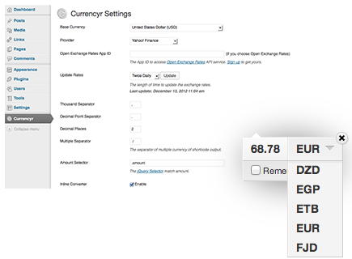

Currencyr for WordPress
A simple yet advanced, intuitive, easy-to-use and complete currency converter plugin with a beatiful unique converter tooltip.
Demo Download GitHub Repository
Instead of traditional "calculator" looks converter, Currencyr take the advance of "tooltip" and sit right at the amount to allow user convert it. Support various exchange rates provider API running as WP Cron task and able to auto-determinate local currency of visitor. Currencyr also offers currency converter widget, shortcode and function.
Take advance of WordPress as interface of various exchange rates provider such as Yahoo!, Google, Open Exchange Rates, European Central Bank and FoxRates. Enable integration with WooCommerce, WP-eCommerce, Shopp and Easy Digital Downloads.
- Inline converter using Currencyr for jQuery
- Support various exchange rates providers
- Support database cache driven for fast response
- WP Cron task scheduler enabled
- Shortcode quick conversion support
- Currency table and converter widget
- Support integration with various ecommerce plugins
- Auto-determinate local currency
- Full translation support
- Function for theme developer
- Beautifully written codes in PHP 5 OO